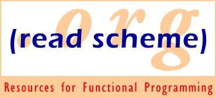

Inside readscheme.org...
Bibliography of Scheme-related Research
Online Bibliography of Partial Evaluation Research
A Mini-bibliography on Module Systems for Functional Programming Languages
A Reading List on XML and Web Programming in Functional Programming Languages
This site is maintained by
Jim Bender
.
Hosted by
Untyped
.
Last modified: Monday, February 16th, 2009 6:23:54pm
HTML generated using
WebIt!
.